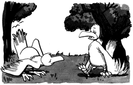

Rec.Humor.Funny FAQ

"I just flew in from the coast,
and boy, are my arms ever tired."
Frequently Asked Questions
A lot of questions are answered in the introductions to the group and the submission and offensive jokes policies. You may wish to read them first.
- Q: Why isn't RHF as funny now as it used to be?
A: rec.humor.funny tries to avoid repeating jokes. There is now a new subgroup of RHF called rec.humor.funny.reruns. This group, or our Jokes of the day from the "Best of Archives" will let you see the older material.
A lot of the old favourites and classics have already been posted. That makes it a lot harder to come up with good submissions compared to when you're just starting a joke collection. The gems will be fewer and farther between. Now, with this web server, you can read the old jokes and enjoy a good laugh more often.
Groups like rec.humor constantly recycle jokes -- that's one thing people end up hating about them -- but it means that for newcomers there are always fun "new" jokes.
- Q: I don't like the moderator. I liked one of the old moderators better!
A: Tastes vary, both among moderators, and among readers. We have to expect that some people who liked an old moderator will not be as pleased with a new one, and vice versa.
- Q: I'm really offended by that joke you posted!
A: Sorry to hear that. We do hear that, alas, on just about every joke that is even slightly offensive. Please read the policy on offensive jokes for more details.
- Q: Who are you to pick the jokes?
A: This is a volunteer operation, like just about everything else on USENET and the web. Brad Templeton started it because he wanted to do it. It's not a job he did for somebody. To say a moderator of a newsgroup performs a service is only partly right. The truth is that the effort is a gift given to the net, in exchange for the reward of doing it and perhaps some fame. If you like the newsgroup, read it. If not, please don't read it, but don't tell us, other than constructively, how we're not doing a good enough "job" for you.
- Q: I think the moderator should be replaced.
A: As noted, the moderator is doing you a favour. If you don't like it, and would prefer that you or somebody else do something similar on the net, go ahead and make that happen or encourage it. There is no law that says there can't be more than one comedy newsgroup or web page.
- Q: How many submissions does RHF get each day?
A: It varies a bunch, but from between 10 to 40 items. In the early days, when rec.humor was being called, an additional 50 or so per day were scanned there. Overall there have been 41,000 submissions from about 22,000 users since mid-1990, and about 6000 postings since the start of the group. clobot@caen.engin.umich.edu wins the prize with 236 submissions as of 1/23/96, and Peeter.Motskula@f70.n490.z2.fidonet.org is trailing with 172. However, this is not a contest! Quality, not quantity, please.
- Q: I heard that this newsgroup got banned. What happened?
- Q: What happened to Maddi Hausmann Sojourner?
A: Maddi's now a proud mom. She found she didn't have the time for her career, rec.humor.funny and the munchkin.
- Q: What do all the keywords in the headers mean?
A: Read all about it and the other headers too.
- Q: When will the joke search engine be finalized?
A: It's a busy world. Right now we're working to get the right combination of hardware and search software to do it right, because we're expecting the joke database to be popular. Actually even now you can search many of the jokes with popular search engines by insisting that the string "rec.humor.funny joke archives" appear in the results.
- Q: Can you send me the joke about the two ...
A: Alas, no. We get so many requests from people asking us to look up a joke that we simply have to refuse to be a joke server for anybody. That's why the search engine is available.
- Q: Won't you burn in hell for posting all these evil, blasphemous jokes?
A: Probably won't burn, but we may itch like crazy.
- Q: How can I comment on material in rec.humor.funny?
There is a special unmoderated newsgroup for discussion of all the humor newsgroups on the net and other humor issues. It is called rec.humor.d. You can post a complaint there.
- Q: Why did the TeleJoke RT on GEnie disappear?
A: Nobody will say quite for sure. When Brad Templeton decided he didn't have the time to do it any more, GEnie decided not to pass it on to anybody else. It wasn't due to lack of popularity of the Round Table, however. There is some question that General Electric might have been wary of carrying the no-holds-barred uncensored joke sections of the RT.
- Q: Did rec.humor.funny have anything to do with how ClariNet was started?
A: Yes indeed. Read the story of RHF and ClariNet here.